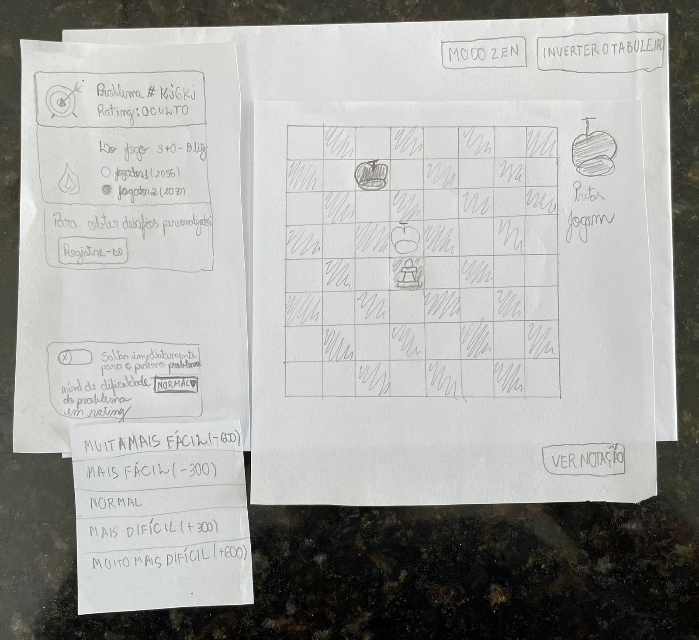

Relato de resultados do protótipo de papel
Introdução
Protótipos tem como objetivo permitir que usuários e stakeholders consigam interagir com um produto pensado. Isso é extremamente prático para coleta de pontos positivos e negativos acerca de uma funcionalidade do produto como um todo.
A utilização de protótipo de papel permite o foco na funcionalidade, deixando abstrato para o usuário questões como design, dessa forma a chance do usuário se distrair é menor.
Os principais benefícios da utilização de protótipos são: reflexão do design, esclarecimento de requisitos e realização de testes iniciais.
Objetivos
Essa avaliação tem como objetivo entender no aplicativo e em fluxos alternativos, o que está sendo bem implementado e o que seria melhor alterar, tendo uma lista de feedback de usuários reais.
Metodologias
Para a maior fonte de informações possíveis, o projeto de IHC Lichess decidiu utilizar entrevistas para coletar os pontos negativos e positivos do design. Além disso, a entrevista permite realizar uma série de perguntas para direcionar a simulação.
Antes da entrevista duas ações devem ser executadas: elaboração do protótipo de papel e teste piloto.
Teste piloto é uma exceção preliminar da entrevista, comumente realizada pelo próprio grupo de desenvolvedores ou pequena amostra de participantes a fim de avaliar os aspectos da avaliação e corrigir eventuais falhas antes da implementação definitiva, o que caso não seja feito, pode invalidar dados coletados.
Avaliadores e participantes
Foram realizadas três entrevistas e os avaliadores e participantes estão listados abaixo:
-
Entrevista 1: A entrevista foi conduzida pelos avaliadores Lucas Macedo e Lucas Gabriel. O entrevistador Lucas Macedo ficou responsável por gravar a execução do teste e observar o comportamento do usuário, de forma que o entrevistador Lucas Gabriel fez as perguntas e interação com o usuário. Para preservar o participante, o nome e idade do entrevistado não será utilizado e será utilizado um nome fictício. O primeiro entrevistado será chamado de Pedro, tem 24 anos e executou o fluxo de jogar uma partida, criando o modo e entrando para jogar contra o computador, tal entrevistado possui o perfil de novato no xadrez se encaixando na persona de usuário casual.
-
Entrevista 2: A entrevista foi conduzida pelo avaliador Mauricio Machado, o qual ficou responsável por gravar a execução do teste, observar o comportamento do usuário, fazer as perguntas e interagircom o usuário simulando o funcionamento do sistema. Para preservar o participante, o nome e idade da entrevistada não será utilizado e será utilizado um nome fictício. A segunda entrevistada será chamada de Amanda, tem 22 anos e executou o fluxo de aprender, acessando uma aula de xadrez, tal entrevistada possui o perfil de novata no xadrez se encaixando na persona de usuário casual.
-
Entrevista 3: A entrevista foi conduzida pelo avaliador Lucas Gabriel, o qual ficou responsável por gravar a execução do teste, observar o comportamento do usuário, fazer as perguntas e interagircom o usuário simulando o funcionamento do sistema. Para preservar o participante, o nome e idade do entrevistado não será utilizado e será utilizado um nome fictício. O terceiro entrevistado será chamado de Matheus, tem 20 anos e executou o fluxo de jogar uma partida, criando o modo e entrando para jogar contra o computador, aprender, acessando uma aula de xadrez, e resolver problemas de xadrez, resolvendo quebra-cabeças de xadrez, tal entrevistado é um jogador experiente com relação ao xadrez e no sítio eletrônico se encaixando na persona de usuário experiente.
Termo de consentimento
Dentro do termo, buscamos informar tanto sobre a pesquisa quanto a gravação das entrevistas, deixando claro que tudo ocorrerá garantindo o sigilo das informações sensíveis e somente com a devida autorização.
Figura 1: Termo de consentimento (Fonte: autor, 2023).
Protótipo de papel
Jogar uma partida
A seguir, temos as imagens do protótipo de jogar uma partida

Imagem 1: Jogar uma partida - parte 1 - Tela inicial (Fonte: Autores, 2023).

Imagem 2: Jogar uma partida - parte 2 - Clicar no botão de jogar (Fonte: Autores, 2023).

Imagem 3: Jogar uma partida - parte 3 - Criação de partida (Fonte: Autores, 2023).
Imagem 4: Jogar uma partida - parte 4 - Seleção do modo de jogo (Fonte: Autores, 2023).

Imagem 5: Jogar uma partida - parte 5 - Iniciar partida (Fonte: Autores, 2023).
Acessar uma aula de xadrez criada por usuários
A seguir temos as imagens do protótipo de acessar uma aula de xadrez

Imagem 6: Acessar uma aula - parte 1 - Tela Inicial do protótipo. Fonte: Mauricio Machado (2023).

Imagem 7: Acessar uma aula - parte 2 - Tela de opções de aprendizado. Fonte: Mauricio Machado (2023).

Imagem 8: Acessar uma aula - parte 3 - Tela com listagem de aulas. Fonte: Mauricio Machado (2023).

Imagem 9: Acessar uma aula - parte 4 - Modal com resumo de uma aula. Fonte: Mauricio Machado (2023).

Imagem 10: Acessar uma aula - parte 5 - Página com conteúdo de aula. Fonte: Mauricio Machado (2023).
Resolver problemas de xadrez
A seguir, temos as imagens do protótipo de resolver problemas de xadrez
Imagem 11: Resolver problemas de xadrez - parte 1 - Tela inicial (Fonte: Autores, 2023).
Imagem 12: Resolver problemas de xadrez - parte 2 - Seleção do estilo de resolução de problemas (Fonte: Autores, 2023).
Imagem 13: Resolver problemas de xadrez - parte 3 - Explicação do modo de problema (Fonte: Autores, 2023).
Imagem 14: Resolver problemas de xadrez - parte 4 - Problema (Fonte: Autores, 2023).
Imagem 15: Resolver problemas de xadrez - parte 5 - Modo zen (Fonte: Autores, 2023).
Imagem 16: Resolver problemas de xadrez - parte 6 - notação da partida (Fonte: Autores, 2023).

Imagem 17: Resolver problemas de xadrez - parte 7 - Escolha de dificuldade de problema (Fonte: Autores, 2023).
Imagem 18: Resolver problemas de xadrez - parte 8 - Problema mais difícil (Fonte: Autores, 2023).
Teste piloto
Entrevista relativa ao teste piloto dos fluxos de jogar uma partida, aprender e resolver problemas de xadrez.
Vídeo 1: Teste piloto da Avaliação Protótipo de Papel fluxo de de jogar uma partida, aprender e resolver problemas de xadrez. Fonte: autor (2023).
Entrevista 1
Entrevista relativa ao fluxo de jogar uma partida.
Vídeo 2: Avaliação Protótipo de Papel fluxo de jogar uma partida. Fonte: autor (2023).
Entrevista 2
Entrevista relativa ao fluxo de aprender uma aula no Lichess.
Vídeo 3: Avaliação Protótipo de Papel fluxo de aprender aula. Fonte: autor (2023).
Entrevista 3
Entrevista relativa ao fluxo de jogar uma partida, aprender e resolver problemas de xadrez.
Vídeo 4: Avaliação Protótipo de Papel fluxo de resolver problemas de xadrez. Fonte: autor (2023).
Conclusão
Durante o teste piloto foi verificado que tudo estava corretamente preparado para a execução da avaliação.
Conclusão entrevista 1:
Foi observado que o modelo para jogar uma partida utilizado está adequado, pois o usuário consegiu realizar a atividade proposta sem muitas dúvidas, porém é necessário a realização de alguns ajustes como: - Opção para jogar sem estar cadastrado bem visível - Falta de texto para melhor entendimento da cor de peças escolhida
Conclusão entrevista 2:
Quanto ao modelo para aprender uma aula foram identificados três problemas que geram confusão e/ou impossibilidade de concluir o fluxo. São eles:
- Modal de resumo de uma aula não apresentar botão para fechar ou sair do modal.
- Tela de opções do aprender ter nomes muito próximos (básicos do xadrez e aula), o que afeta principalmente usuários casuais e iniciantes.
- Página de aula tem chat com pouca visibilidade, o que dificulta na hora de se comunicar com outros estudantes da mesma aula.
Apesar desses pontos, o usuário conseguiu concluir as operações em tempo útil para um perfil iniciante.
Conclusão entrevista 3:
Foi observado que o modelo para começar uma aula utilizado está adequado, pois o usuário consegiu realizar a atividade proposta sem muitas dúvidas, porém é necessário a realização de alguns ajustes como: - A aba de feedback poderia ser menor
Foi observado que o modelo para jogar uma partida utilizado está adequado, pois o usuário consegiu realizar a atividade proposta sem muitas dúvidas, porém é necessário a realização de alguns ajustes como: - Melho especificação do modo criar uma partida, para como jogar online - Melhor ajuste da disposição do tempo durante a partida, mais posicionado nos extremos para maior clareza
Foi observado que o modelo para resolver problemas utilizado está adequado, pois o usuário consegiu realizar a atividade proposta sem muitas dúvidas, porém é necessário a realização de alguns ajustes como: - Mudança do nome de problemas para quebra-cabeça, para maior clareza para jogadores iniciantes
Bibliografia
[1] BARBOSA, Simone; DINIZ, Bruno. Interação Humano-Computador. Editora Elsevier, Rio de Janeiro, 2010.
[2] Seidman, Irving (2019). Interviewing as Qualitative Research: A Guide for Researchers in Education and the Social Sciences. Teachers College Press, New York, NY, 5th edition edition.
Histórico de Versão
| Versão | Data | Descrição | Autor(es) | Revisor(es) |
|---|---|---|---|---|
1.0 |
11/01/2022 | Criação do documento | Lucas Macedo e Lucas Gabriel | Davi |
1.1 |
16/01/2022 | Adição do fluxo de aprender uma aula | Maurício Machado | Nicolas Souza |
1.2 |
17/01/2022 | Padronização de legendas | Maurício Machado | Nicolas Souza |
2.0 |
01/02/2023 | Refatoração do documento | Lucas Gabriel | Nicolas Souza |